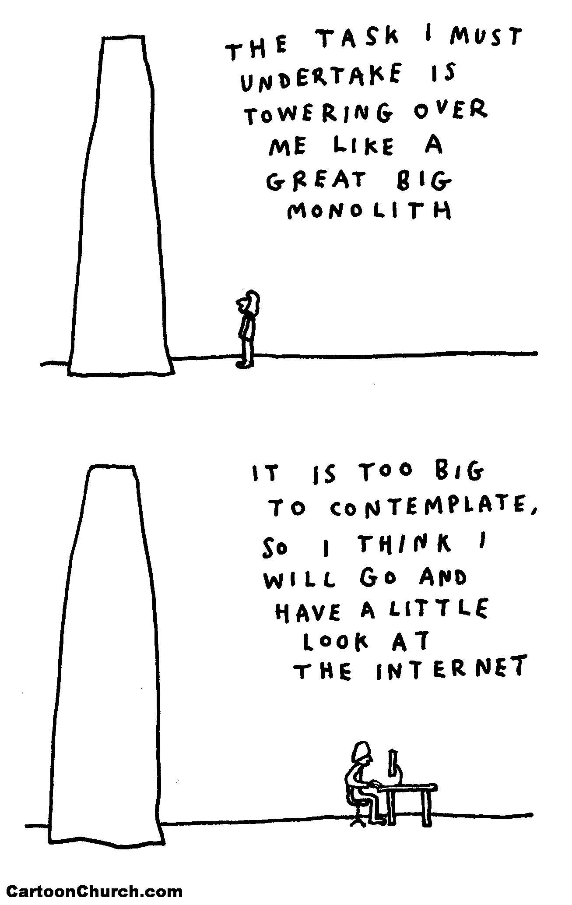
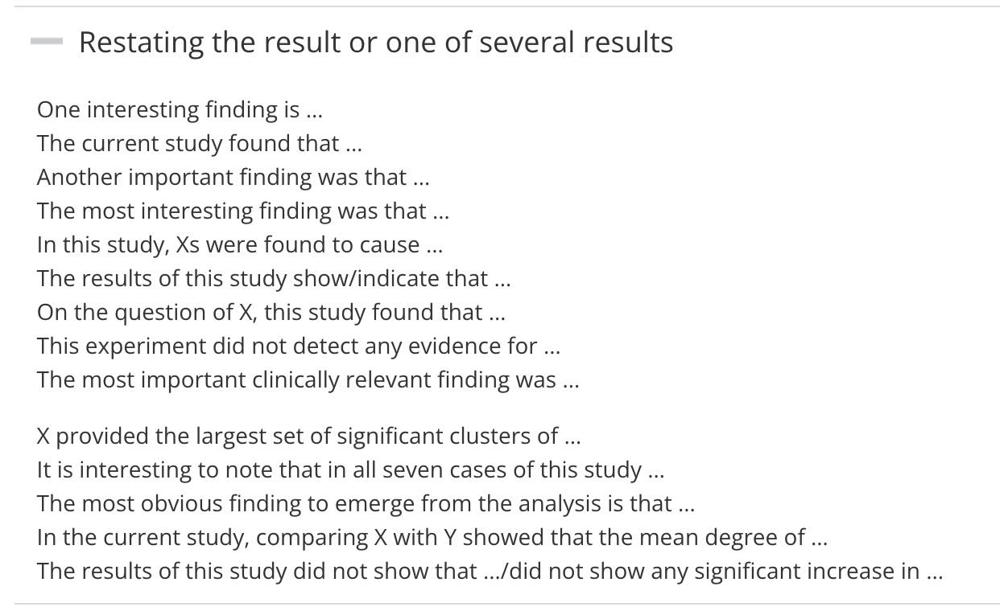
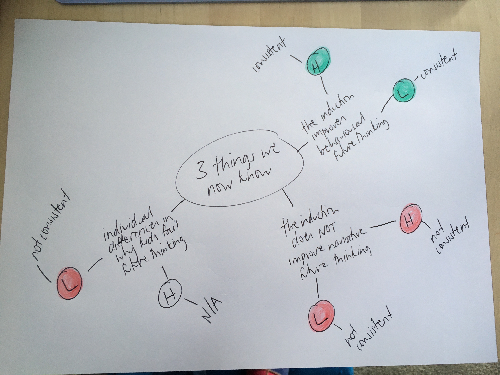
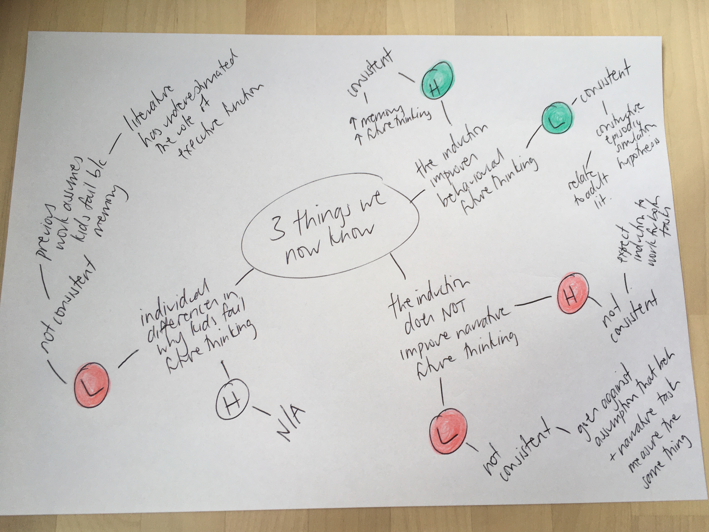
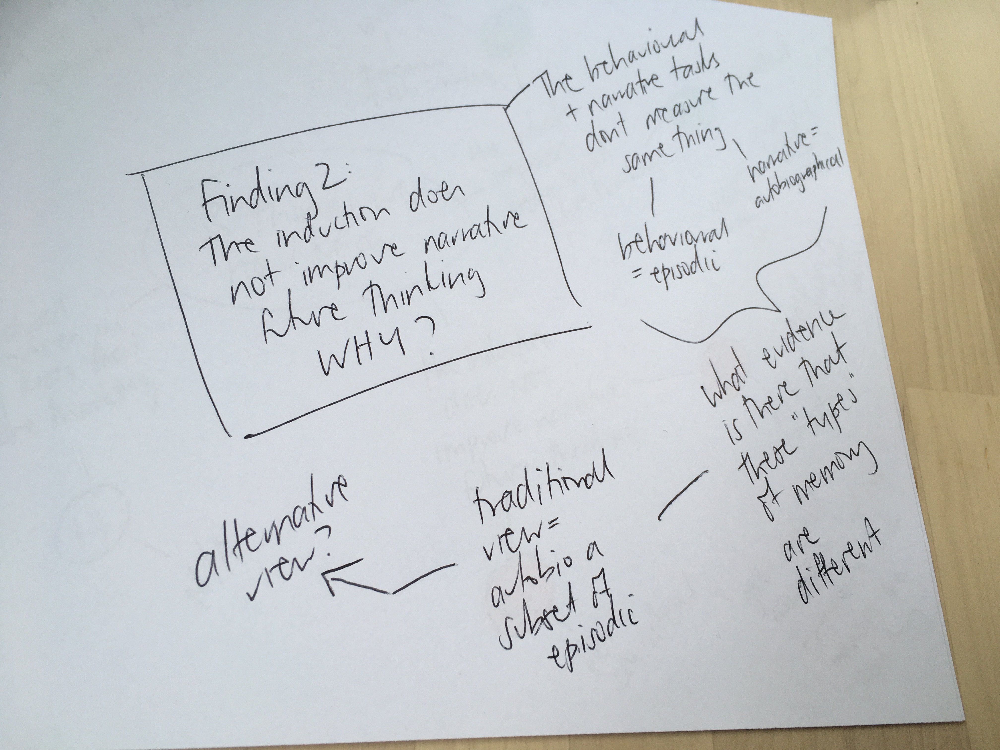

https://jennyslides.netlify.app/gd/
Jenny Richmond PhD
Most of the content in this workshop is my personal opinion (backed up with a little bit of research and a fair bit of experience)
If something I say contradicts what your supervisor has told you, go with their context-specific expertise.
“The purpose of the discussion is to interpret and describe the significance of your findings in light of what was already known about the research problem being investigated, and to explain any new understanding or fresh insights about the problem after you’ve taken the findings into consideration.”

To write your general discussion, you will need to…
Like introductions, general discussions are pretty formulaic.
Your marker will smile if you make the “moves” that they expect.
Restate your results
be careful not to just repeat your results
Photo by Filip Zrnzević on Unsplash

Relate your results
Important
Lots of students describe how their findings relate to hypotheses/literature without explaining. Your marker wants you to do the hard thinking for them. Don’t forget to unpack the connections you are making.
Take your spider diagram and add more legs.
For each finding, add a note relating to your hypotheses (H) and past literature (L).
Highlight consistencies one colour and inconsistencies another colour.
Add extra legs describing HOW your findings are (or aren’t consistent)


Consistent? - great! Explain HOW your findings have advanced the field.
Not consistent? - great! Explain WHY you think your study turned out that way
Warning
This is where discussion writing gets hard
… more than 80% of honours project don’t “work”?
Most often, the best discussions come out of studies where not everything went to plan.
When your study didn’t “work”, you have much more scope to think critically, creatively, and flexibly.
Maybe the effect is real, I just wasn’t able to detect it…
… aka my study didn’t work because (in retrospect) it sucked.
Warning
These explanations apply to all research theses written in the world ever… try to avoid relying on them. If you do need to, be specific. Make sure to explain EXACTLY HOW that problem resulted in the PATTERN of data you got
Maybe other researchers in the field have missed something …
… I need to go back to the literature (or sometimes back to my data) and find an explanation
Important
This is where HD theses stand out from D theses. Your marker is looking for evidence that you can think critically, creatively, and flexibly and that you can communicate clearly, persuasively, and with authority.
Tip
You probably wont have enough information to know whether a given explanation works and thats ok. Use the uncertainty as an opportunity to make future research suggestions. What study should be done to confirm your intuition?
Pick one of your findings and make a new spider diagram.
Try out some big picture thinking.
It probably won’t click right now… digging into the literature will lead you down different paths too.
Zoom out a bit… what are the implications of your findings?
Warning
Don’t exaggerate. It is unlikely that your study will change clinical practice, government policy, or the theoretical direction of the field. Use cautious phrasing (see Manchester phrasebank). Also you might not have enough information to know whether your findings really do have implications for a particular theory or real world thing… What future research would you do to confirm?
Honours research projects have lots of limitations.
You don’t need to talk about them all (esp those that apply to everyone).
Only talk about those that are specific to YOUR PROJECT and have clearly had an impact on the PATTERN of data that you got.
Tip
Don’t leave limitations hanging, use them to make suggestions for future research.
At this point you might have already embedded ideas for future research in …
Now your marker is looking for the next step in this research program. Imagine you are going to do a PhD in this area… what is the next question that researchers in this field should answer?
Important
Avoid future research suggestions that apply to all research theses in the world ever and think big. What is the next big question? How would you conduct that study?
In summary…
Tip
Other discussion writing resources I recommend…
Lots of great advice about academic writing generally and discussion writing specifically